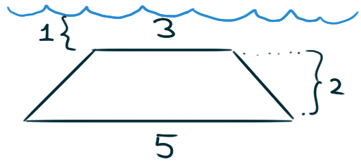

Consider a glass plate (lamina)
in the shape of an isosceles triangle
with side-lengths five, five, and six.
Suppose we submerge this plate in water.
If we submerge the plate “flat” in the water
at a depth of three meters,
how much hydrostatic force is the plate experiencing?
If we submerge the plate tip-first into the water
with the long edge of the plate along the water’s surface,
how much hydrostatic force is the plate experiencing?
Suppose you submerge trapezoid-shaped glass plate
into a pool of water as shown.
Measurements are in meters.

What is the total amount of hydrostatic force
the plate is experiencing?
What is the total amount of hydrostatic force
the plate would experience if lowered
five meters deeper into the water?
If the plate is rated to withstand
\(1\,\text{million N}\) of force,
at what depth should we begin to worry that it’ll break?